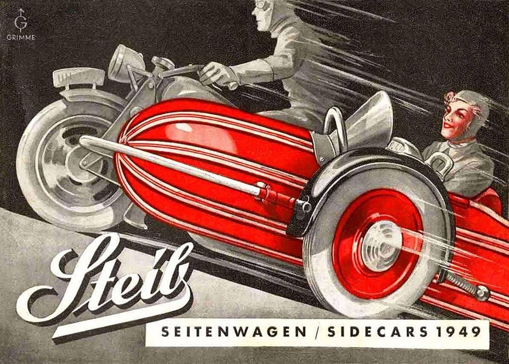
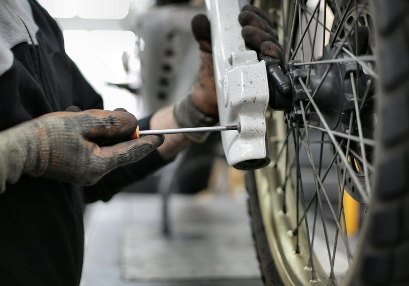
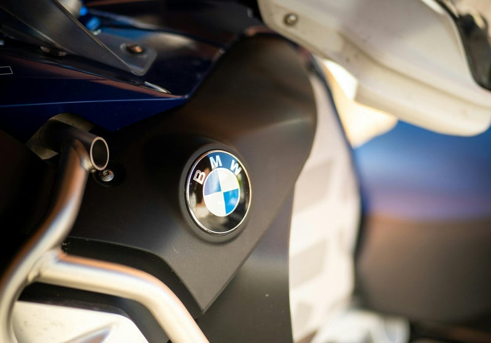
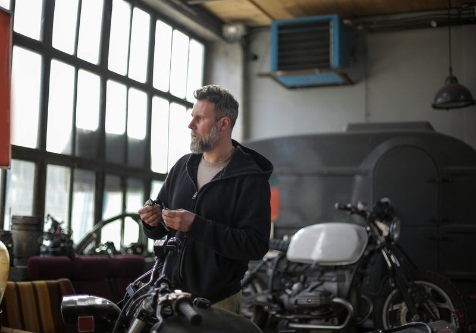

C'est ici que commence notre aventure. Apprenez à connaître notre entreprise et ce que nous faisons. Nos engagements : la qualité et un service impeccable.

Nous sommes fiers de notre adaptabilité et de notre engagement envers l'excellence dans tous les aspects de notre service. Découvrez ce que nous avons à offrir et voyez comment nous pouvons contribuer à votre réussite.


